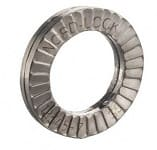

Nord-Lock Шайба нержавеющая для агрессивных сред
Стандарт
DIN 25201
Размерный ряд
вномерного распределения нагрузки применяйте шайбы Nord-Lock "sp" с фланцевыми болтами или гайками.
Шайбы металлические, кольца » Стопорные клиновые шайбы Nord Lock DIN 25201 нержавеющие для агрессивных сред (twin-lock, wedge lock, 2fix)
Варианты и размеры (21)
| Наименование | Размер | Длина, мм | Материал | Покрытие | Цена |
|---|---|---|---|---|---|
| Nord-Lock Шайба нержавеющая для агрессивных сред M10 L=254мм | M10 | 254 | 24,30 ₽ | ||
| Nord-Lock Шайба нержавеющая для агрессивных сред M11 L=254мм | M11 | 254 | 14,70 ₽ | ||
| Nord-Lock Шайба нержавеющая для агрессивных сред M12 L=254мм | M12 | 254 | 24,00 ₽ | ||
| Nord-Lock Шайба нержавеющая для агрессивных сред M14 L=254мм | M14 | 254 | 14,00 ₽ | ||
| Nord-Lock Шайба нержавеющая для агрессивных сред M16 L=254мм | M16 | 254 | 19,80 ₽ | ||
| Nord-Lock Шайба нержавеющая для агрессивных сред M18 L=254мм | M18 | 254 | 33,00 ₽ | ||
| Nord-Lock Шайба нержавеющая для агрессивных сред M20 L=254мм | M20 | 254 | 21,20 ₽ | ||
| Nord-Lock Шайба нержавеющая для агрессивных сред M22 L=254мм | M22 | 254 | 34,30 ₽ | ||
| Nord-Lock Шайба нержавеющая для агрессивных сред M24 L=254мм | M24 | 254 | 28,90 ₽ | ||
| Nord-Lock Шайба нержавеющая для агрессивных сред M27 L=254мм | M27 | 254 | 35,30 ₽ | ||
| Nord-Lock Шайба нержавеющая для агрессивных сред M3 | M3 | 1,20 ₽ | |||
| Nord-Lock Шайба нержавеющая для агрессивных сред M3 L=254мм | M3 | 254 | 10,60 ₽ | ||
| Nord-Lock Шайба нержавеющая для агрессивных сред M3.5 L=254мм | M3.5 | 254 | 12,20 ₽ | ||
| Nord-Lock Шайба нержавеющая для агрессивных сред M30 L=254мм | M30 | 254 | 44,70 ₽ | ||
| Nord-Lock Шайба нержавеющая для агрессивных сред M33 L=254мм | M33 | 254 | 32,10 ₽ | ||
| Nord-Lock Шайба нержавеющая для агрессивных сред M36 L=254мм | M36 | 254 | 50,40 ₽ | ||
| Nord-Lock Шайба нержавеющая для агрессивных сред M39 L=254мм | M39 | 254 | 22,30 ₽ | ||
| Nord-Lock Шайба нержавеющая для агрессивных сред M4 L=254мм | M4 | 254 | 6,30 ₽ | ||
| Nord-Lock Шайба нержавеющая для агрессивных сред M5 L=254мм | M5 | 254 | 6,70 ₽ | ||
| Nord-Lock Шайба нержавеющая для агрессивных сред M6 L=254мм | M6 | 254 | 14,20 ₽ | ||
| Nord-Lock Шайба нержавеющая для агрессивных сред M8 L=254мм | M8 | 254 | 9,50 ₽ |